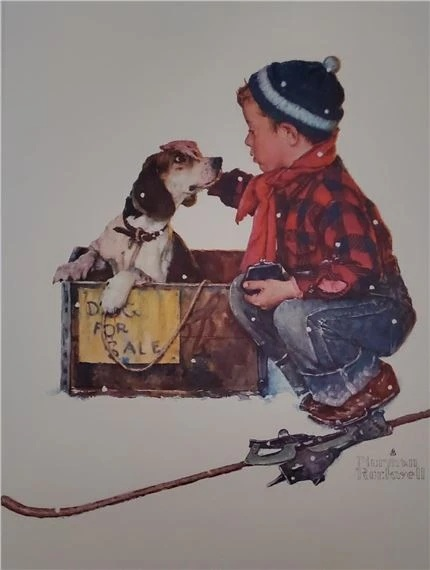

Exhibitions
Inbred/Hybrid, Gallery Stendhal, New York, New York, US, September 14–October 13, 1991.
Notes
This work references Norman Rockwell’s A Boy and His Dog; a representative image is available here.
Ancillary Documentation

Inbred/Hybrid, Gallery Stendhal, New York, New York, US, September 14–October 13, 1991.
This work references Norman Rockwell’s A Boy and His Dog; a representative image is available here.
